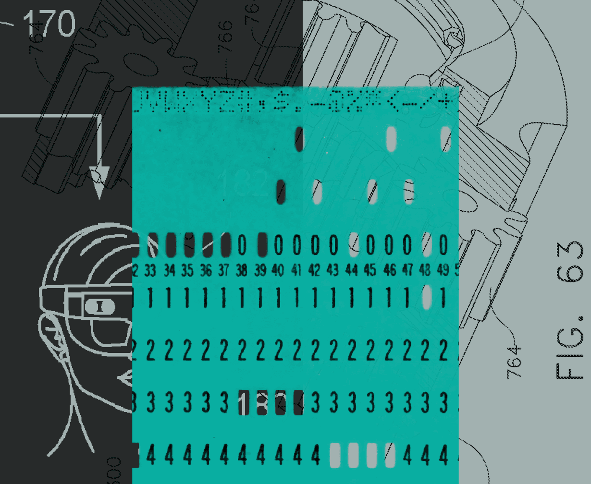

05 typesafe.ai 게시일 2026.09.15
TypeSafe AI, 자동화용 Jev 얼리 액세스 시작

TypeSafe AI는 AI를 사람과 대화시키기보다 소프트웨어 안에서 바로 판단하게 쓰는 데 초점을 맞췄다. 이번에 공개한 Jev는 문장을 길게 생성하지 않는다. 대신 입력 상태를 받아 구조화된 결정과 확률을 돌려준다. 회사는 이 설계가 자동화 코드에 더 잘 맞는다고 설명했다.
핵심 브리핑
이 모델은 챗봇용이 아니라 자동화용이다. 소프트웨어가 처리하기 어려운 분류, 라우팅, 점수화, 추출 같은 판단을 빠르게 내리도록 설계했다. Jev는 자유로운 문자열 생성을 포기했다. 대신 미리 정한 형식의 값만 반환한다. 회사는 이 방식이라면 타입 오류가 없고 환각도 없다고 밝혔다.
TypeSafe AI는 Jev를 얼리 액세스로 내놨다. 회사는 새 아키텍처와 병렬 샘플러, RLCD라는 학습 방식을 함께 개발했다고 설명했다. Jev의 종단 응답 시간은 70ms~500ms라고 밝혔다. 비교 대상으로 든 프런티어 모델의 응답 시간은 3초~329초였다. 회사는 같은 종류의 System One 작업에서 40배~200배 빠르다고 주장했다.
- 입력 가격: 100만 토큰당 0.042달러
- 출력 가격: 무료 수준이라 별도 과금하지 않는다고 설명
- 비교용 일반 모델 입력 가격: 100만 토큰당 0.20달러~10달러
- 일반 모델 출력 가격: 입력보다 약 5배 비싸다고 설명
- 홈페이지 수치: 193.6배 빠름, 444.6배 저렴함
회사 설명에는 단서도 붙었다. 공개된 속도 평가는 미국 서부에 있는 자사 서비스 기준이며, 대체로 자사 노트북에서 실행했다. 가격은 투명하게 공개했지만 보조금 없이도 지속 가능한지는 시간이 지나야 입증된다고 적었다. 데모 질의는 단순화했고, 짧고 조밀한 입력을 써서 자사 방식에 유리한 조건을 만들었다고 인정했다.
주요 트렌드
이번 발표는 더 큰 범용 모델 경쟁과 다른 길을 제시한다. TypeSafe AI는 사람과 대화하는 범용성보다 코드 안에서 바로 쓸 수 있는 결정 기능을 내세웠다. 모델을 '함수 호출'처럼 쓰게 하겠다는 접근이다.
가격 정책도 다르다. 출력 토큰 과금을 사실상 없애고, 구조화된 값만 돌려주는 방식으로 비용과 지연을 함께 줄이겠다는 계산이다. 회사는 대규모 데이터에 맵리듀스처럼 적용하거나, 실시간 앱에서 100ms 수준 응답이 필요한 곳, 다른 LLM의 출력 검증과 가드레일(안전 제어선)에도 쓸 수 있다고 제시했다.
다만 성능 비교의 기준은 회사가 직접 설계한 워크플로 평가다. 정답 레이블 대신 Astra와 Fable 같은 외부 대형 모델의 평균 확률을 기준값으로 썼다. 독립 평가가 아니라는 점은 함께 봐야 한다.
업계의 움직임
공개 반응은 아직 초기 단계다. 이번 글에서는 고객사 도입 사례나 외부 독립 평가 결과를 제시하지 않았다. 회사는 얼리 액세스 사용자를 대상으로 실제 질의와 워크플로 평가 사이트를 열어 검증 자료를 보강하겠다고 밝혔다.
시사점과 체크포인트
우리 회사라면 챗봇 전면 교체보다 규칙형 판단 업무부터 검토하는 편이 맞다. 예를 들면 문서 분류, 민원 라우팅, 거래 검토 우선순위, 출력값 검증 같은 영역이다.
확인할 질문은 분명하다.
- 출력 형식을 우리 시스템 스키마에 바로 맞출 수 있는가
- 확률값과 신뢰도를 업무 규칙에 어떻게 반영할 것인가
- 지연 시간 70ms~500ms가 우리 배치·실시간 요건에 맞는가
- 자사 평가 외에 독립 벤치마크가 있는가
- 환각이 없다는 주장과 타입 오류가 없다는 주장을 우리 데이터로 재현할 수 있는가
금융 업무는 잘못된 한 번의 판단 비용이 크다. 그래서 평균 정확도보다 실패 조건과 불확실성 표기가 더 중요하다. Jev가 강점으로 내세운 구조화 출력과 신뢰도 표시는 이 요구와 맞닿아 있다. 반면 자유로운 문장 생성이 필요한 상담·설명 업무에는 맞지 않을 수 있다.
주요 용어
원문 정보
제목: Introducing System One Models and Jev
게시일: 2026.09.15
출처 URL: https://typesafe.ai/blog/introducing-system-one-models-and-jev